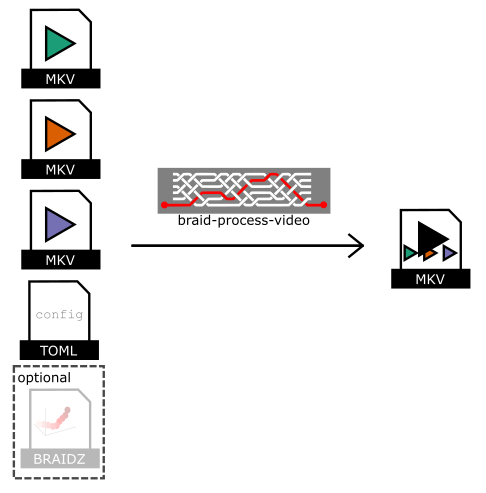

Braid and Strand Camera
This is the User's Guide for Braid and Strand Camera.
Braid and Strand Camera are free and open source. You can find the source code on GitHub. Issues and feature requests can be posted on the GitHub issue tracker.
About this book
The source code for this documentation is at github.com/strawlab/strand-braid/tree/main/strand-braid-user/users-guide. This book is made with mdBook.
Hardware selection
PC requirements
- Supports Ubuntu 20.04 amd64 operating system. This is currently our only supported platform.
- Fast CPU. Currently an Intel CPU is recommended due to the use of the Intel Integrated Performance Primitives Library.
- Memory usage is not expected to be particularly high, because processing occurs in realtime.
- Sufficient and fast interfaces to cameras. If your cameras are USB3 or Gigabit ethernet, your computer needs to support enough bandwidth.
- Disk space and speed. For realtime tracking, the tracking data is only modest in size and so no particularly high performance requirements exist. With Nvidia hardware that supports NVENC hardware-accelerated encoding (see below), compressed, H.264 encoded video can be saved to MP4 files with also only modest CPU and disk requirements are present. For streaming uncompressed, raw video to disk (with MP4 or the FMF format), very fast disks and lots of disk space are required.
Hardware-accelerated video encoding using nvidia video cards
NVIDIA video encoding hardware is optionally used to encode H.264 videos in the MP4 format. This is very nice because it takes almost no CPU and full framerate videos can be recorded from your cameras during live tracking with little or no loss of performance. This depends on NVIDIA's library called NVENC. Please see NVIDIA's site for supported hardware. Note in particular the limit of three encode sessions with the consumer (GeForce) hardware that does not exist on many of their professional (Quadro) cards.
Camera requirements
Currently, Basler cameras using the Pylon API are the only supported cameras. We plan to support cameras from Allied Vision using the Vimba API in late 2021 or 2022.
Basler cameras
Due to the use of the Pylon API, any camera which can be used in the Pylon Viewer can be used in principle. In practice, we regularly test with the following cameras:
- Basler a2A1920-160umPRO
- Basler a2A1920-160umBAS
- Basler acA1300-200um
- Basler acA640-120gm
Allied Vision cameras (Planned for late 2021 or 2022)
Due to the use of the Vimba API, any camera which can be used in the Vimba Viewer can be used in principle. In practice, we intend to use the following cameras:
- Allied Vision Alvium 1800 U-240m
Installation
Software installation
Download releases from our releases page
Hardware installation
Cameras
Currently only Basler cameras are supported. We use Basler's Pylon library to access the cameras.
Support for other cameras is planned.
Trigger box
Braid uses the Straw Lab Triggerbox hardware to synchronize the cameras. This is based on an Arduino microcontroller.
Trigger cables
TODO: write this and describe how to check everything is working.
.braidz files
A .braidz file contains the results of realtime tracking, the tracking
parameters, and so on.
Viewer
A viewer for .braidz files is at braidz.strawlab.org.
Analysis scripts
Scripts to analyze your .braidz files can be found at github.com/strawlab/strand-braid/tree/main/strand-braid-user/analysis.
Latency Analysis
To analyze the latency of your setup with Braid, you can use the Jupyter Notebook braid-latency-analysis.ipynb.
Content analysis
The Jupyter Notebook braidz-contents.ipynb can be used to view the Kalman estimates, the raw 2D detections, data on the association of cameras, and data on associations between 2D detection and 3D Tracking in your .braidz file.
Plotting
The following plots were made with the file
20201112_133722.braidz.
The scripts can be accessed at
github.com/strawlab/strand-braid/tree/main/strand-braid-user/analysis.
A Jupyter Notebook to create all of these plots can be found in braid-plotting.ipynb in the same folder.
braid-analysis-plot-data2d-timeseries.py

braid-analysis-plot-kalman-estimates-timeseries.py

braid-analysis-plot3d.py

File Format
A .braidz file is actually a ZIP file with specific contents. It can be
helpful to know about these specifics when problems arise.
Showing the contents of a .braidz file
You can show the filenames inside a .braidz file with
unzip -l FILENAME.braidz.
Extracting a .braidz file
You can extract a .braidz file to its contents with unzip FILENAME.braidz.
Creating a .braidz file
You can create a new .braidz file with:
cd BRAID_DIR
zip ../FILENAME.braidz *
Note, your .braidz file should look like this - with no directories other than
images/.
$ unzip -l 20191125_093257.braidz
Archive: 20191125_093257.braidz
zip-rs
Length Date Time Name
--------- ---------- ----- ----
97 2019-11-25 09:33 README.md
155 2019-11-25 09:33 braid_metadata.yml
0 2019-11-25 09:33 images/
308114 2019-11-25 09:33 images/Basler_22005677.png
233516 2019-11-25 09:33 images/Basler_22139107.png
283260 2019-11-25 09:33 images/Basler_22139109.png
338040 2019-11-25 09:33 images/Basler_22139110.png
78 2019-11-25 09:33 cam_info.csv.gz
2469 2019-11-25 09:33 calibration.xml
397 2019-11-25 09:33 textlog.csv.gz
108136 2019-11-25 09:33 kalman_estimates.csv.gz
192 2019-11-25 09:33 trigger_clock_info.csv.gz
30 2019-11-25 09:33 experiment_info.csv.gz
2966 2019-11-25 09:33 data_association.csv.gz
138783 2019-11-25 09:33 data2d_distorted.csv.gz
--------- -------
1416233 15 files
Note that the following is NOT a valid .braidz file because it has a leading
directory name for each entry.
$ unzip -l 20191119_114103.NOT-A-VALID-BRAIDZ
Archive: 20191119_114103.NOT-A-VALID-BRAIDZ
Length Date Time Name
--------- ---------- ----- ----
0 2019-11-19 11:41 20191119_114103.braid/
97 2019-11-19 11:41 20191119_114103.braid/README.md
155 2019-11-19 11:41 20191119_114103.braid/braid_metadata.yml
0 2019-11-19 11:41 20191119_114103.braid/images/
320906 2019-11-19 11:41 20191119_114103.braid/images/Basler_22005677.png
268847 2019-11-19 11:41 20191119_114103.braid/images/Basler_22139107.png
308281 2019-11-19 11:41 20191119_114103.braid/images/Basler_22139109.png
346232 2019-11-19 11:41 20191119_114103.braid/images/Basler_22139110.png
225153 2019-11-19 11:41 20191119_114103.braid/images/Basler_40019416.png
86 2019-11-19 11:41 20191119_114103.braid/cam_info.csv.gz
2469 2019-11-19 11:41 20191119_114103.braid/calibration.xml
10 2019-11-19 11:41 20191119_114103.braid/textlog.csv.gz
10 2019-11-19 11:41 20191119_114103.braid/kalman_estimates.csv.gz
10 2019-11-19 11:41 20191119_114103.braid/trigger_clock_info.csv.gz
10 2019-11-19 11:41 20191119_114103.braid/experiment_info.csv.gz
10 2019-11-19 11:41 20191119_114103.braid/data_association.csv.gz
20961850 2019-11-19 12:17 20191119_114103.braid/data2d_distorted.csv.gz
--------- -------
22434126 17 files
Contents of a .braidz file
The most important tables in the .braidz file are kalman_estimates, with the
3D tracking results, and data2d_distorted, with the 2D camera detections.
data2d_distorted table
The data2d_distorted table contains the raw (2D) camera detections and is
typically quite large. See the documentation for the row type
Data2dDistortedRow.
This file is important for carrying synchronization data between cameras. For
example, when saving videos, the timing data carried by the
frame
and
block_id
fields is important.
kalman_estimates table
The kalman_estimates tables contains the estimated state (positions and
velocities) of each tracked object in addition to the estimated covariance. See
the documentation for the row type
KalmanEstimatesRow.
data_association table
The data_association table contains which camera detections contributed to
estimating the state of which objects in the kalman_estimates table. See the
documentation for the row type
DataAssocRow.
Chunked iteration of kalman_estimates
The primary tracking results are in the kalman_estimates table. There can
often be many gigabytes of data here, and thus it is useful to iterate over
duration-defined chunks in this file. This way, the entire .braidz file never
needs to be decompressed and the all results do not need to fit in your
computer's memory at once.
This following example uses the pybraidz_chunked_iter Python package. It
iterates over chunks of the file 20201104_174158.braidz, which can be
downloaded here:
import pybraidz_chunked_iter # install with "pip install pybraidz_chunked_iter"
import pandas as pd
# The filename of the braidz file
braidz_fname = "20201104_174158.braidz"
# Open the braidz file and create chunks of 60 second durations.
estimates_chunker = pybraidz_chunked_iter.chunk_on_duration(braidz_fname, 60)
# One could also create chunks with 100 frames of data.
# estimates_chunker = pybraidz_chunked_iter.chunk_on_num_frames(braidz_fname, 100)
# Iterate over each chunk
for chunk in estimates_chunker:
print("Read chunk with %d rows"%(chunk["n_rows"],))
# Create a pandas DataFrame with the data from each chunk
df = pd.DataFrame(data=chunk["data"])
print(df)
3D Tracking in Braid
Principle of operation
This page describes the basic principles of how tracking in 3D is implemented by Braid. A more detailed and more mathematical description can be found in the paper describing Braid's predecessor, Straw et al. (2011). Please refer to this for more details.
Straw et al. 2011: Straw AD, Branson K, Neumann TR, Dickinson MH (2011) Multicamera Realtime 3D Tracking of Multiple Flying Animals. Journal of The Royal Society Interface 8(11), 395-409. doi:10.1098/rsif.2010.0230
 .
.
Figure 1: Principles of 3D Tracking in Braid. References in blue refer to parts of Straw et al. (2011). (a) Flowchart of operations. (b) Schematic of a two-dimensional camera view showing the raw images (brown), feature extraction (blue), state estimation (black), and data association (red). (c) Three-dimensional reconstruction using the EKF uses prior state estimates (open circle) and observations (blue lines) to construct a posterior state estimate (filled circle) and covariance ellipsoid (dotted ellipse). This figure and some caption text reproduced from Figure 2 of Straw et al. (2011) under the Creative Commons Attribution License.
(TODO: walkthrough of figure above.)
Tracking in water with cameras out of water
One important aspect of Braid not covered in Straw et al. (2011) is the the capability of tracking fish (or other objects in water) from cameras placed above the water surface.
Refraction
When looking through the air-water interface (or any refractive boundary), objects on the other side appear from a different direction than the direct path to the object due to refraction. Mathematically, refraction is described by Fermat's principle of least time, and this forms the basis of Braid's tracking in water.
Principle of operation for tracking in water
When considering the principle of operation of 3D tracking described above, the primary addition to Braid required for tracking in water is the ability to model the rays coming from the animal to the camera not as straight lines but rather having a bend due to refraction. To implement this, the observation model of the extended Kalman filter is extended to incorporate the air-water boundary so that it consists of both a 3D camera model and air-water surface model. Thus, during the update step of the Kalman filter, this non-linear model is linearized about the expected (a priori) position of the tracked object.
Currently, Braid has a simplification that the model of the air-water boundary is always fixed at z=0. Thus, anything with z<0 is under water and anything with z>0 is above water. This implies that the coordinate frame for tracking with an air-water boundary must have this boundary at z=0 for correct tracking.
How to enable tracking in water.
Practically speaking, tracking using the model of an air-water boundary is
enabled by placing the string <water>1.333</water> the XML camera calibration
file. This will automatically utilize the refractive boundary model described
above with a value for the refractive index of 1.333 for the medium at z<0. As
1.333 is the refractive index of water, it is a model of refraction in water.
Tracking multiple objects in 3D
It is possible to use Braid to track two or more objects in 3D. Typically this
requires the per-camera, 2D object detection to be set to also detect multiple
objects. Thus, the parameter max_num_points in the Object Detection
configuration of Strand Camera should be set to at least the number of objects
that should be tracked.
To maintain object identity over time, such that a single trajectory is recorded for a single animal, Braid uses a simple data association algorithm which assumes independent movement of the tracked objects. This is sufficient in many cases for tracking animals even when they interact strongly with each other, but it is typically be necessary to tune relevant tracking and data association parameters to get the best performance possible.
Details about how data are processed online and saved for later analysis
While running, Braid saves a copy of all incoming feature detections from the cameras as a first step prior to inspecting frame numbers and bundling data from synchronously acquired data from multiple cameras. Combined with issues such as unreliable networks, this has the unfortunate effect that frames saved to disk cannot be guaranteed to be monotonically increasing. For online processing to implement 3D tracking, there is always an idea of "current frame number". Any data from prior frames is immediately discarded from further consideration (but it was saved to disk as described above). If the incoming frame number is larger than the current frame number, any accumulated data for the "current frame" is deemed complete and this is bundled for immediate processing. If the incoming frame number is larger than a single frame from the current frame number, additional frames of empty data are generated so that the stream of bundled data is contiguous (with no gaps) up until the incoming frame number, which then becomes the new "current frame number".
Note that in post-processing based on data saved in .braidz files, a better
reconstruction can be made than possible in the online approach described above
because data which may have been discarded originally could be incorporated into
the tracking process. Furthermore, because latency is no longer a significant
concern, reconstruction for a particular instant need not be performed with only
historical data but can also incorporate information that occurred after that
instant.
Setting and optimizing parameters for 3D Tracking
Object Detection
The basis of 3D Tracking is a 2D object detection procedure, usually performed on simultaneously acquired images from at least two cameras.
Object detection is based on background subtraction and feature extraction. In Braid, these parameters are typically set in the .toml config file specified when starting the program. When not explicitly specified, default parameters are used. Within Strand Camera, including when run from within Braid, these parameters can be set in a running instance. The parameters are specified in a camera-specific way, meaning that each camera can have its own parameter values.
In Strand Camera, the option Record CSV file will record the object detection
results in CSV format with a header including the object detection parameters in
use at the start of the recording.
The details on implementation and parameters can be found in the ImPtDetectCfg section of the API.
A more technical account of this procedure can be found in Straw et al. (2011).
3D Tracking
3D tracking is based on data association, which links 2D features from individual cameras to a 3D model, and an Extended Kalman Filter, which updates the estimated position and velocity of the 3D model from the 2D features.
The implementation details for the 3D tracking procedures can be found in the TrackingParams section of the API.
Calibration in Braid
What is a calibration?
In our usage here, we refer to a calibration as a model of a camera which allows us to compute the 2D image location of a given 3D point. Braid can use calibrations of multiple cameras to calculate the 3D position of a given point when viewed in 2D camera images.
For a given camera, the calibration is divided into two parts. The "extrinsics", or extrinsic parameters, define the pose of the camera. This is the 3D position and orientation of the camera. The "intrinsics", or intrinsic parameters, define the projection of 3D coordinates relative to the camera to an image point in pixels. In Braid, the camera model is a pinhole model with warping distortion. The intrinsic parameters include focal length, the pixel coordinates of the optical axis, and the radial and tangential parameters of a "plumb bob" distortion model (also called the Brown-Conrady distortion model).
XML calibration files in Braid
The XML calibration files used in Braid are backwards-compatible with those from Braid's predecessor, Flydra. Several of the steps described here also use tools from Flydra.
Step 1: setup cameras (zoom, focus, aperture, gain) and lights
Setup camera position, zoom, focus (using an object in the tracking volume) and aperture (slightly stopped down from wide-open). Exposure times and gains are set in Strand Cam for each camera individually. Note that if you intend to run at 100 frames per second, exposure times must be less than 10 milliseconds. These settings (exposure time and gain) are (unfortunately) currently not saved in any file, and can be set only in the camera settings GUI (in the browser). The camera keeps these values persistently when it is on, but if it has been power cycled, it will reset to new values.
Try to a luminance distribution which extends across the entire dynamic range of your sensor (from intensity values 0 to 255) with very little clipping.
Step 2: run "Checkerboard Calibration" to get the camera intrinsic parameters
(There is a script to draw checkerboards as SVG files:
draw_checkerboard_svg.py.)
In Strand Cam, there is a region called "Checkerboard Calibration" which allows
you to calibrate the camera intrinsic parameters. Show a checkerboard to the
camera. You must enter your the checkerboard parameters into the user interface.
For example, a standard 8x8 checkerboard would have 7x7 corners. Try to show the
checkerboard at different distances and angles. Do not forget to show the
checkerboard corners in the corners of the camera field of view. There is a
field which shows the number of checkerboard collected - this should increase as
the system detects checkerboards. When you have gathered a good set of (say, at
least 10) checkerboards, click the "Perform and Save Calibration" button. The
results of this calibration are saved to the directory
$HOME/.config/strand-cam/camera_info.
Repeat this for all cameras before proceeding to the next step.
Step 3: collect calibration data and run MultiCamSelfCal (MCSC)
To calibrate Braid, we use MultiCamSelfCal. This is a software package which takes simultaneously captured images of an LED moving through a volume to create a single calibration for all cameras.
Acquire a dataset for MultiCamSelfCal
Room lights should be off.
Synchronize your cameras and start saving data and begin to collect data by moving a LED in the arena (try move the LED in the whole arena volume, also turn it off and on sometimes to validate synchronization). When you are done, stop saving.
Convert .braidz file to flydra mainbrain .h5 file
Note: from here in the document, there are many commands used from Flydra. While Braid itself runs without needing Flydra in any way, performing calibration and other data analysis steps currently requires the use of Flydra. Specifically, the
flydra_analysispackage is required. Please see here for instructions about Flydra installation.
By converting from .braidz to a Flydra mainbrain .h5 file, you can use the
wide range of analysis programs from flydra.
For example, let's say you have the file 20190924_161153.braidz saved by the
Braid program. We will use the script convert_braidz_to_flydra_h5.py
to do this conversion:
python ~/src/strand-braid/strand-braid-user/scripts/convert_braidz_to_flydra_h5.py --no-delete 20190924_161153.braidz
Upon success, there will be a new file saved with the suffix .h5. In this
case, it will be named 20190924_161153.braidz.h5.
We can do the above but making use of bash variables to save typing later BRAIDZ_FILE.
BRAIDZ_FILE=20190924_161153.braidz
DATAFILE="$BRAIDZ_FILE.h5"
python ~/src/strand-braid/strand-braid-user/scripts/convert_braidz_to_flydra_h5.py --no-delete $BRAIDZ_FILE
Note that this conversion requires the program compute-flydra1-compat (this
should be installed with Strand Camera and Braid by default and is part of the
the braid-offline rust crate) to be on your path if you are converting 3D
trajectories.
Run MultiCamSelfCal on data collected with Braid
You can collect data and calibrate similar to the description for Flydra
If your mainbrain .h5 file is in the location $DATAFILE, you can run the MultiCamSelfCal
program on this data to generate a multiple camera calibration.
flydra_analysis_generate_recalibration --2d-data $DATAFILE --disable-kalman-objs $DATAFILE --undistort-intrinsics-yaml=$HOME/.config/strand-cam/camera_info --run-mcsc --use-nth-observation=4
This will print various pieces of information to the console when it runs. First it will print something like this:
851 points
by camera id:
Basler_40022057: 802
Basler_40025037: 816
Basler_40025042: 657
Basler_40025383: 846
by n points:
3: 283
4: 568
This means that 851 frames were acquired in which 3 or more cameras detected exactly one point. The contribution from each camera is listed. In this example, all cameras had between 657 and 846 points. Then, the number of points detected by exactly 3 cameras is shown (283 such frames) and exactly 4 cameras (568 frames).
Important things to watch for are listed here. These may be useful, but are rather rough guidelines to provide some orientation:
-
No camera should have very few points, otherwise this camera will not contribute much to the overall calibration and will likely have a bad calibration itself.
-
The number of points used should be somewhere between 300 and 1000. Fewer than 300 points often results in poor quality calibrations. More than 1000 points results in the calibration procedure being very slow. The
--use-nth-observationcommand line argument can be used to change the number of points used.
After running successfully, the console output should look something like this:
********** After 0 iteration *******************************************
RANSAC validation step running with tolerance threshold: 10.00 ...
RANSAC: 1 samples, 811 inliers out of 811 points
RANSAC: 2 samples, 811 inliers out of 811 points
RANSAC: 2 samples, 762 inliers out of 762 points
RANSAC: 1 samples, 617 inliers out of 617 points
811 points/frames have survived validations so far
Filling of missing points is running ...
Repr. error in proj. space (no fact./fact.) is ... 0.386139 0.379033
************************************************************
Number of detected outliers: 0
About cameras (Id, 2D reprojection error, #inliers):
CamId std mean #inliers
1 0.41 0.41 762
2 0.33 0.33 811
3 0.49 0.41 617
4 0.33 0.37 811
***************************************************************
**************************************************************
Refinement by using Bundle Adjustment
Repr. error in proj. space (no fact./fact./BA) is ... 0.388949 0.381359 0.358052
2D reprojection error
All points: mean 0.36 pixels, std is 0.31
finished: result in /home/strawlab/20190924_161153.braidz.h5.recal/result
Important things to watch for:
-
There should only be one iteration (numbered
0). -
The mean reprojection error should be low. Certainly less than 1 pixel and ideally less than 0.5 pixels as shown here.
-
The reprojection error should be low across all cameras.
The above example calibration is a good one.
Convert your new calibration to an XML file which can be used by Braid
Convert this to XML:
flydra_analysis_calibration_to_xml ${DATAFILE}.recal/result > new-calibration-name.xml
You may now use this new calibration, saved as an XML file, as the calibration
for Braid. Specify the filename of your new XML file as cal_fname in the
[mainbrain] section of your Braid configuration .toml file.
With the new calibration, perform offline tracking the data used to calibrate.
Now you have a working calibration, which is NOT aligned or scaled to any coordinate system, but an (undefined) coordinate system that from MCSC code picked. We can use this calibration to do tracking, although in general having correct scaling is important for good tracking. The reason correct scaling is important for good quality tracking is because Braid tracks using a dynamic model of movement in which maneuverability is parameterized and tracking performance is best when the actual maneuverability statistics match the expected statistic.
So, using the calibration from above, perform 3D tracking of the data with:
flydra_kalmanize ${DATAFILE} -r ${DATAFILE}.recal/result
You can view these results with:
DATAFILE_RETRACKED=`python -c "print('${DATAFILE}'[:-3])"`.kalmanized.h5
flydra_analysis_plot_timeseries_2d_3d ${DATAFILE} -k ${DATAFILE_RETRACKED} --disable-kalman-smoothing
Align your new calibration using a GUI
Now we will take our existing "unaligned" calibration, and despite the scaling and alignment issue, track some points so that we have 3D coordinates. We will use these 3D coordinates to "align" our calibration -- to adjust its scaling, rotation, and translation to arrive at a final calibration which outputs coordinates in the desired frame.
Now, using the unaligned calibration from above, collect a dataset which outlines the geometry of your arena or other key 3D points which we serve as reference 3D points used to discover the correct alignment. We will use these unaligned 3D points output from the unaligned calibration to determine an alignment and scaling used to transform these 3D points to the correct, "aligned" 3D points. These alignment parameters will be used to update the original unaligned calibration into the final aligned calibration.
The easiest way to acquire unaligned 3D points is to acquire a new dataset
directly by running Braid with the new unaligned calibration. Alternatively, one
can use a pre-existing 2D dataset and re-track it with flydra_kalmanize as
above. We will call this dataset for alignment ${NEW_TRACKED_DATA}.
With this new dataset for alignment, we render the 3D tracks with a 3D model of
some pre-specified geometry in the correct coordinate frame. We then adjust the
alignment parameters by hand in a GUI. Here we align our newly tracked data in
file ${NEW_TRACKED_DATA} against the sample_bowl.xml file from
here.
In this example, the sample_bowl.xml file outlines a circle with diameter 0.33
meters on the Z=0 plane. In this example, we tracked an LED outlining a circle
of diameter 0.33 meters and on the plane which will be Z=0 in our final
coordinate frame. Here is how to run the GUI program for running the alignment:
flydra_analysis_calibration_align_gui --stim-xml ~/src/flydra/flydra_analysis/flydra_analysis/a2/sample_bowl.xml ${NEW_TRACKED_DATA}
Automatic alignment of calibrations
As an alternative to using the GUI to perform alignment, it is possible to find
the correct alignment automatically. The flydra program
flydra_analysis_align_calibration does this. The major mathematical operations
are performed in the estsimt function in
flydra_core.align.
(TODO: Write an example doing this.)
Calibration with water
As described
here, Braid
can track objects in water. To enable this, place the string
<water>1.333</water> in the XML camera calibration file.
Remote Cameras for Braid
What are "remote cameras"?
A remote camera, in the context of Braid, can be used to connect cameras on separate computers over the network to an instance of Braid. One or more instances of Strand Camera can thus run on computers other than the computer on which Braid is running.
Starting a remote camera
If a particular camera is marked by setting start_backend = "remote" in the
[[cameras]] section of the Braid configuration TOML file, braid run does not
attempt to start the camera but rather waits for a network connection from a
Braid-tuned variant of Strand Camera. Only once all cameras listed in the TOML
file have connected will Braid synchronize the cameras and allow recording of
data.
To start Strand Camera as a remote camera for Braid, run strand-cam-pylon (to
start Strand Camera) with the command line argument --braid_addr <URL>
specifying the URL for the braid HTTP address. The camera name should also be
specified on the command line, along with any other options.
In the following example, the Strand Camera will open the camera named
Basler-12345 and will connect to Braid running at http://127.0.0.1:44444.
strand-cam-pylon --camera-name Basler-12345 --braid_addr http://127.0.0.1:44444
Scripting with Python
Everything in Strand Cam and Braid that can be controlled from the web browser can also be controlled from a Python script. The general technique is to use a Python library to connect to a running Strand Cam (or Braid) program exactly like a web browser does it.
Demo: changing tracking settings from a Python script
TODO: describe how to use and modify the record-mp4-video.py
demo.
Advanced: automating manual actions
TODO: describe how to use the developer tools to watch the network requests from your browser to view HTTP POST callbacks taken on certain actions.
Advanced: Running Strand Cam within Python
It is also possible to run strand cam within a Python program. This allows, for example, to analyze images from within a Python script with minimal latency. See the py-strandcam directory.
Processing recorded videos using Braid
Overview
The braid-process-video program will takes video files and process them to
produce various outputs.

As shown in the figure, this program takes .mp4 (or .fmf) video input files
saved by Braid and a configuration file and then creates an output .mp4 video
which stitches the input videos together. Optionally, it can also plot 2D
detections from a .braidz file on top of the raw video.
Note
- The input videos must be saved by Braid to ensure that the timestamps for each frame in the file are correctly stored.
Example usage 1: Automatic determination of inputs
If a directory contains a single .braidz file and one or more video files,
braid-process-video can automatically generate a video with default options.
In this case run it like so:
braid-process-video auto-config --input-dir /path/to/video-and-braidz-files
Example usage 2: Use of a .toml configuration file
Here is an example configuration file braid-bundle-videos.toml:
# The .braidz file with 2D detection data (optional).
input_braidz = "20211011_163203.braidz"
# This stanza specified that an output video will be made.
[[output]]
type = 'video'
filename = 'composite.mp4'
# The following sections specify video sources to use as input.
[[input_video]]
filename = 'movie20211011_163224.mp4'
[[input_video]]
filename = 'movie20211011_163228.mp4'
With such a configuration file, run the program like so:
braid-process-video config-toml --config-toml braid-bundle-videos.toml
TODO
There are many more options which can be configured in the .toml configuration
file and they should be documented.
FMF (Fly Movie Format) - simple, uncompressed movie storage format
New users are recommended to use MP4 files for video rather than FMF files. Strand Camera supports saving to MP4 files, using several different potential encoders.
The primary design goals of FMF files are:
- Single pass, low CPU overhead writing of lossless movies for realtime streaming applications
- Precise timestamping for correlation with other activities
- Simple format that can be written and read from a variety of languages.
These goals are achieved via using a very simple format. After an initial header containing meta-data such as image size and color coding scheme (e.g. monochromatic 8 bits per pixel, YUV422, etc.), repeated chunks of raw image data and timestamp are saved. Because the raw image data from the native camera driver is saved, no additional processing is performed. Thus, streaming of movies from camera to disk will keep the CPU free for other tasks, but it will require a lot of disk space. Furthermore, the disk bandwidth required is equivalent to the camera bandwidth (unless you save only a region of the images, or if you only save a fraction of the incoming frames).
The FMF file type defines raw image sequences where each image is stored exactly in the raw data bytes as they were acquired from the camera together with with a timestamp. There are two versions implemented, versions 1 and 3 (Version 2 was briefly used internally and is now best forgotten). Version 1 is deprecated and new movies should not be written in this format.
A Rust implementation to read and write .fmf files can be found in the
github.com/strawlab/strand-braid
repository.
Documentation for the file type and reading/writing .fmf files in Python
can be found at the documentation of
motmot.FlyMovieFormat.
A MATLAB® implementation can be found in the
github.com/motmot/flymovieformat
repository.
An R implementation can be found in the github.com/jefferis/fmfio
repository.
Converting movies to and from FMF format with the fmf command line program
The fmf command line program from
https://github.com/strawlab/strand-braid/tree/main/fmf/fmf-cli
can be used for a variety of tasks with .fmf files, especially converting to
and from other formats.
Here is the output fmf --help:
strawlab@flycube10:~$
fmf 0.1.0
work with .fmf (fly movie format) files
USAGE:
fmf <SUBCOMMAND>
FLAGS:
-h, --help Prints help information
-V, --version Prints version information
SUBCOMMANDS:
export-fmf export an fmf file
export-jpeg export a sequence of jpeg images
export-mp4 export to mp4
export-png export a sequence of png images
export-y4m export to y4m (YUV4MPEG2) format
help Prints this message or the help of the given subcommand(s)
import-images import a sequence of images, converting it to an FMF file
info print information about an fmf file
See https://github.com/strawlab/strand-braid/tree/main/fmf/fmf-cli for more information.
File Structure
| FMF File structure |
|---|
| Header |
| Frame chunk 0 |
| Frame chunk 1 |
| Frame chunk 2 |
| ... |
| Frame chunk N |
The chunk size is specified in the header and is equal to the raw frame pixel
data size plus 8 bytes for the timestamp. Thus a 640 pixel wide, 480 pixel high
MONO8 format image would have a chunksize of 307208 (equal to 640 * 480 + 8).
Because the chunk size is constant for all frames, any chunk can be accessed by computing its position and seeking to that location. For the same reason, the image data within FMF files can be memory mapped.
Header Version 3
This is the preferred header for all new FMF files.
| Start position | Type | Name | Description |
|---|---|---|---|
| 0 | u32 | version | Version number (3) |
| 4 | u32 | lenformat | Length of the subsequent format string |
| 8 | [u8; N] | format | ASCII string of N characters containing pixel format, e.g. MONO8 or YUV422 |
| 8+N | u32 | bpp | Bits per pixel, e.g. 8 |
| 12+N | u32 | height | Number of rows of image data |
| 16+N | u32 | width | Number of columns of image data |
| 20+N | u64 | chunksize | Bytes per "chunk" (timestamp + frame) |
| 28+N | u64 | n_frames | Number of frame chunks (0=unknown, read file to find out) |
For the format field, the following pixel formats are known:
| Format string | Description |
|---|---|
MONO8 | Monochrome data, 8 bits per pixel |
RAW8:RGGB | Raw Bayer mosaic data, RGGB pattern, 8 bits per pixel |
RAW8:GBRG | Raw Bayer mosaic data, GBRG pattern, 8 bits per pixel |
RAW8:GRBG | Raw Bayer mosaic data, GRBG pattern, 8 bits per pixel |
RAW8:BGGR | Raw Bayer mosaic data, BGGR pattern, 8 bits per pixel |
YUV422 | Packed YUV encoded data, 16 bits per pixel |
RGB8 | Packed RGB encoded data, 24 bits per pixel |
This list of pixel formats is not exhaustive and other formats can be added.
Header Version 1
⚠ This version is deprecated and no new files with this format should be written. ⚠
Only supports MONO8 pixel format.
| Start position | Type | Name | Description |
|---|---|---|---|
| 0 | u32 | version | Version number (1) |
| 4 | u32 | height | Number of rows of image data |
| 8 | u32 | width | Number of columns of image data |
| 12 | u64 | chunksize | Bytes per "chunk" (timestamp + frame) |
| 20 | u64 | n_frames | Number of frames (0=unknown, read file to find out) |
Frame Chunks
Frame chunks have an identical format in FMF v1 and v3 files. From a given
camera pixel format and size, they are constant in size and thus the Nth frame
can be accessed by seeking to frame0_offset + n*chunksize. The image data is
uncompressed raw image data as read directly from the camera.
| Start position within chunk | Type | Name | Description |
|---|---|---|---|
| 0 | f64 | timestamp | Timestamp (seconds in current epoch) |
| 8 | [u8; N] | image_data | Image data |
Types used above
All numbers are little-endian (Intel standard).
| Type | size (in bytes) | description |
|---|---|---|
| [u8; N] | N | variable length buffer of characters |
| u32 | 4 | unsigned 32 bit integer |
| u64 | 8 | unsigned 64 bit integer |
| f64 | 8 | 64 bit floating point number |
Troubleshooting
synchronization problems
any other problem or question
Please report any issues you face or ask any questions you may have.